Hexatone User Manual
For version 1.3. Hexatone is an isomorphic hexagonal keyboard and microtonal instrument for iPad.
Table of Contents
- Welcome
- Quick start
- The main screen
- Core ideas in one minute
- Playing
- Sound: built-in voices and the sampler
- Scales and tunings
- Layouts
- Appearance and key options
- Using Hexatone with other apps (MIDI and MPE)
- Settings reference
- Uninterrupted playing (iPad gestures)
- Troubleshooting
- FAQ
- Privacy
- Support and links
1. Welcome
Hexatone turns your iPad into a microtonal instrument you can actually play. The keys form a honeycomb where every interval has the same shape no matter where your hand sits, so a chord you learn in one place works everywhere, and any scale transposes by sliding the same shape around.
It plays any tuning, from the familiar twelve notes per octave to far beyond, and it makes its own sound with built-in voices and a sampler, so you do not need any other app to get started. It can also drive MPE-capable synths in tune, and run as a plugin inside your favourite music app.
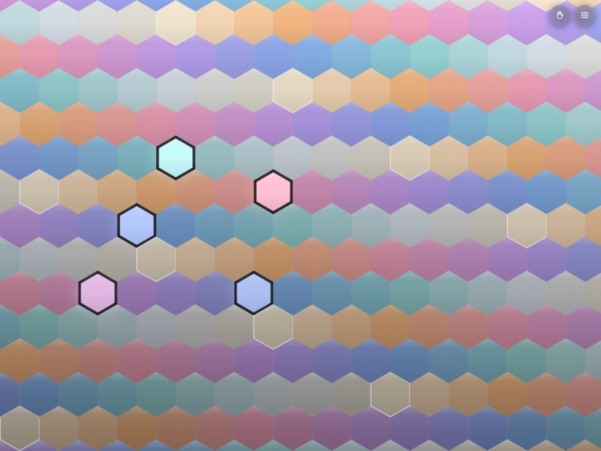
2. Quick start
- Open Hexatone. You will see the hexagonal keyboard.
- Tap some keys. By default you will hear the built-in Hexatone Bell voice.
- Tap the settings button (top right, the sliders icon) to change the tuning, layout, colours, and sound.
- To hear a sustaining sound, open settings, set Built-in sound to Hexatone Glass, close settings, then turn on Hold (top right, the hand icon) and play a chord. Lift your hands and it keeps ringing.
That is the whole loop: play, open settings to shape it, use Hold to sustain.
3. The main screen
The main screen is almost entirely the keyboard, with two floating buttons in the top right corner.
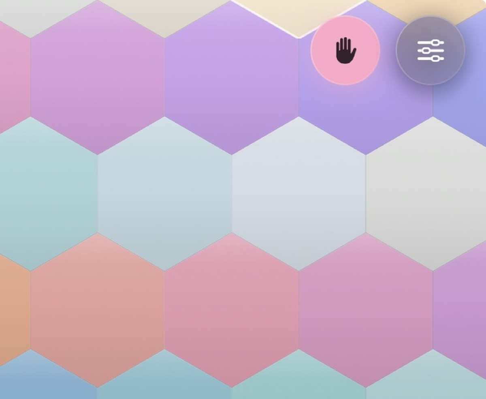
- Hold button (hand icon). Turns Hold (latch) mode on and off. It lights up when on. See Hold mode.
- Settings button (sliders icon). Opens the settings menu, where everything else lives.
The keyboard fills the rest of the screen. Keys light up as you press them, and the colour of each key tells you something about its pitch (see Appearance).
4. Core ideas in one minute
You do not need theory to enjoy Hexatone, but three ideas make it click.
- Isomorphic layout. Every interval is the same physical shape anywhere on the grid. Learn a chord once and it works in every key. Move it up or sideways to transpose.
- Microtonal tuning. Western music usually splits the octave into 12 equal steps. Hexatone can split it into any number (19, 24, 31, and so on), or use a custom scale you import. More steps means more pitches between the familiar ones.
- MPE for in-tune MIDI. To play those in-between pitches on an external synth, Hexatone sends each note on its own MIDI channel with its own pitch bend. This is called MPE. Its own built-in sound is always in tune with no setup.
5. Playing
Touch, chords, and sliding
Press keys with one or more fingers to play notes and chords. You can hold many notes at once (see Voices for the limit). Slide a finger across the grid to glide from one note to the next, which is a natural way to play runs on an isomorphic layout.
Hold mode
Hold (latch) mode lets you sustain notes without keeping your fingers down.
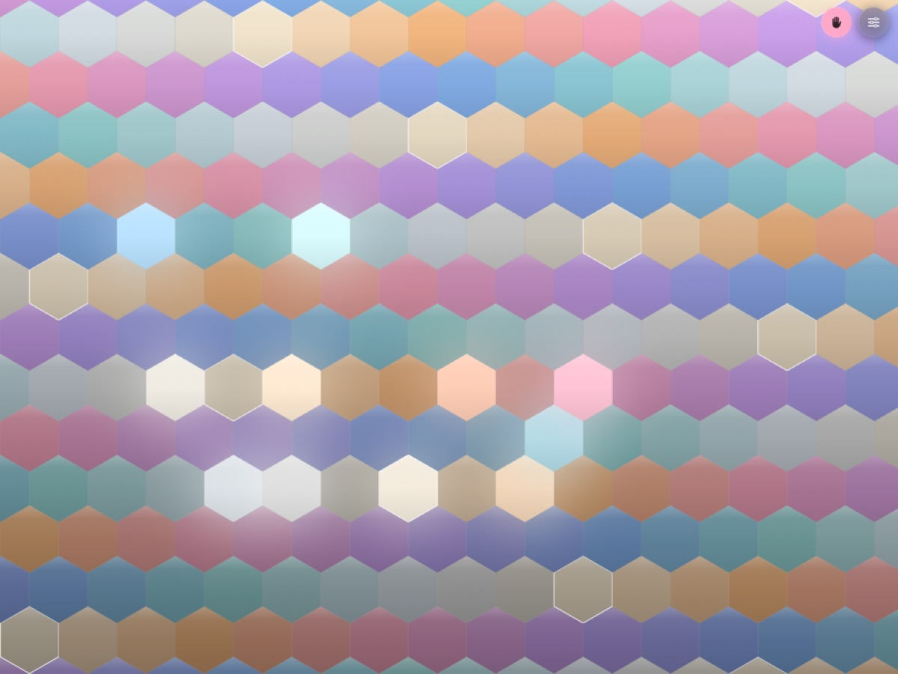
- Turn it on with the Hold button (top right). It lights up when active.
- Press keys to build a chord. When you lift your fingers, the notes keep sounding.
- Tap a key that is already held to drop just that note.
- Turn Hold off to release everything at once.
Held keys show a steady glow so you can see what is latched. Hold works with the built-in voices and with the MIDI you send to other synths.
Note: the Hexatone Bell voice fades away on its own (it is a struck sound), so to truly hear Hold sustain, use Hexatone Glass or a sustaining instrument you imported.
Velocity
Velocity is how hard each note plays. Set how it is decided in settings under Velocity.
- Fixed. Every note plays at the same loudness, which you set with a slider.
- Accelerometer (experimental). Estimates loudness from how hard you tap the iPad. It is a whole-device signal, not per finger, so it is rough.
- Pencil / Force. Uses Apple Pencil or 3D-Touch force where available, and falls back to the fixed value otherwise.
For the two sensing modes you also get a velocity curve: a minimum and maximum velocity, and a curve shape (from "eases to loud" through "linear" to "more expressive").
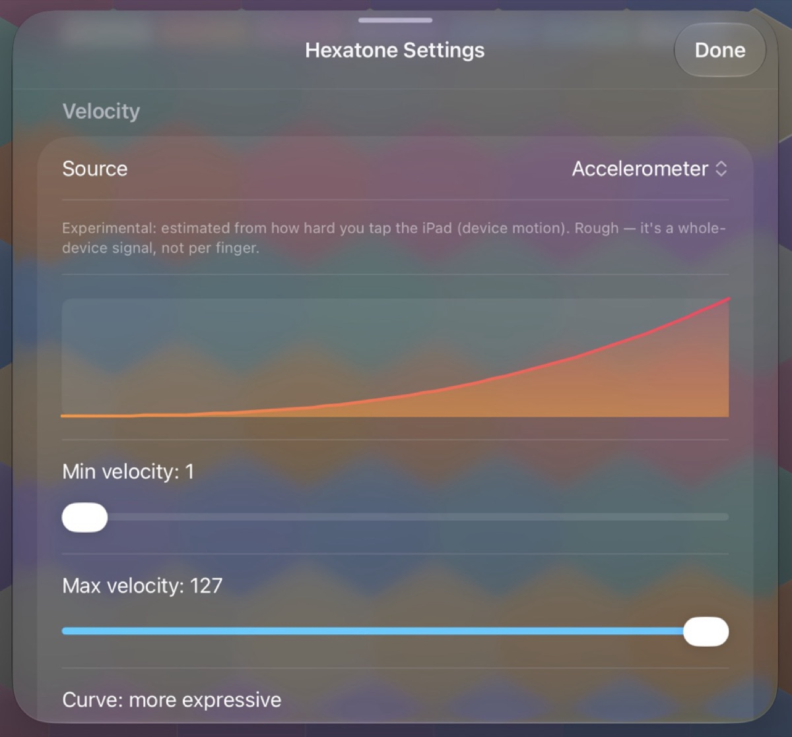
6. Sound: built-in voices and the sampler
Open settings and find the Instrument section. This is where you choose what Hexatone sounds like. Everything here also feeds the MIDI output, so your external synths play along too.
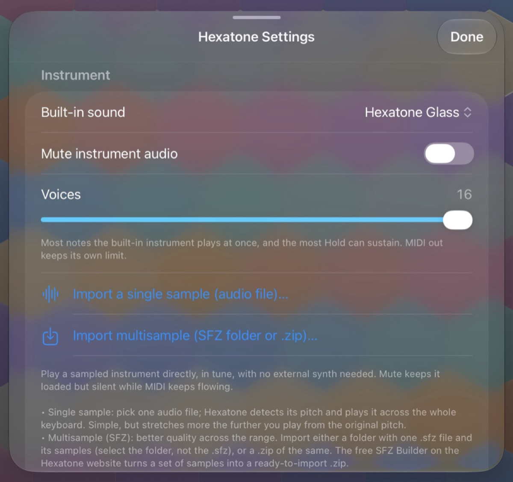
Built-in voices
Under Built-in sound you can choose:
- None (MIDI only). No internal sound. Hexatone only sends MIDI. Use this when you are driving another synth and do not want the built-in voice.
- Hexatone Bell. A struck, bell-like tone that rings and decays. Great for melodies and plucked chords.
- Hexatone Glass. A sustaining, glassy tone that holds for as long as you play. The right choice for pads and for hearing Hold mode sustain.
- Any instrument you imported. Your single samples and multisample packs appear in the same list.
There is also a Mute instrument audio toggle (shown when a sound is selected). It silences the built-in instrument while still sending MIDI, which is handy when you only want to drive an external synth but keep the instrument loaded.
The Sine preview tone toggle at the bottom adds a simple sine voice, useful for checking a tuning by ear without loading an instrument.
Voices (polyphony)
The Voices slider (1 to 16) sets how many notes the built-in instrument can play at once, and how many notes Hold can sustain. If you exceed the limit, the oldest note is released to make room. The MIDI output keeps its own limit (see MPE).
Import a single sample
Tap Import a single sample (audio file). Pick one audio file (WAV and AIFF work best; CAF, M4A, AAC, ALAC, and MP3 usually work; OGG is not supported). Hexatone detects the file's pitch and plays it across the whole keyboard, in tune.
This is the quickest way to get a custom sound. It stretches more the further you play from the sample's original pitch, so it is best for a range around that pitch.
Build an instrument from a folder of samples
If you have a set of recordings but no .sfz file, you do
not need one. Tap Build instrument from folder and
choose a folder of audio files. Hexatone detects each sample's pitch,
splits the keyboard between them, and shows you the detected map.
- Review the map: each sample and the pitch it was placed at. You can confirm it as is, or adjust a sample's pitch if a detection looks off, before anything is imported.
- When the map looks right, confirm to build the instrument.
Because the app builds the instrument itself from your folder, it can
never mismatch its samples the way a hand-written .sfz can.
There is no .sfz file and no web tool needed.
Import a multisample instrument (SFZ)
For better quality across the whole range, import a multisample instrument in SFZ format. Tap Import multisample (SFZ folder or .zip) and choose either:
- a folder that contains one
.sfzfile plus its audio samples (select the folder, not the.sfzfile, so Hexatone can read the samples too), or - a .zip of the same, which is what the free web SFZ Builder gives you.
Multisample instruments map different recordings to different parts of the keyboard, so a piano sounds like a piano high and low, not like one note stretched.
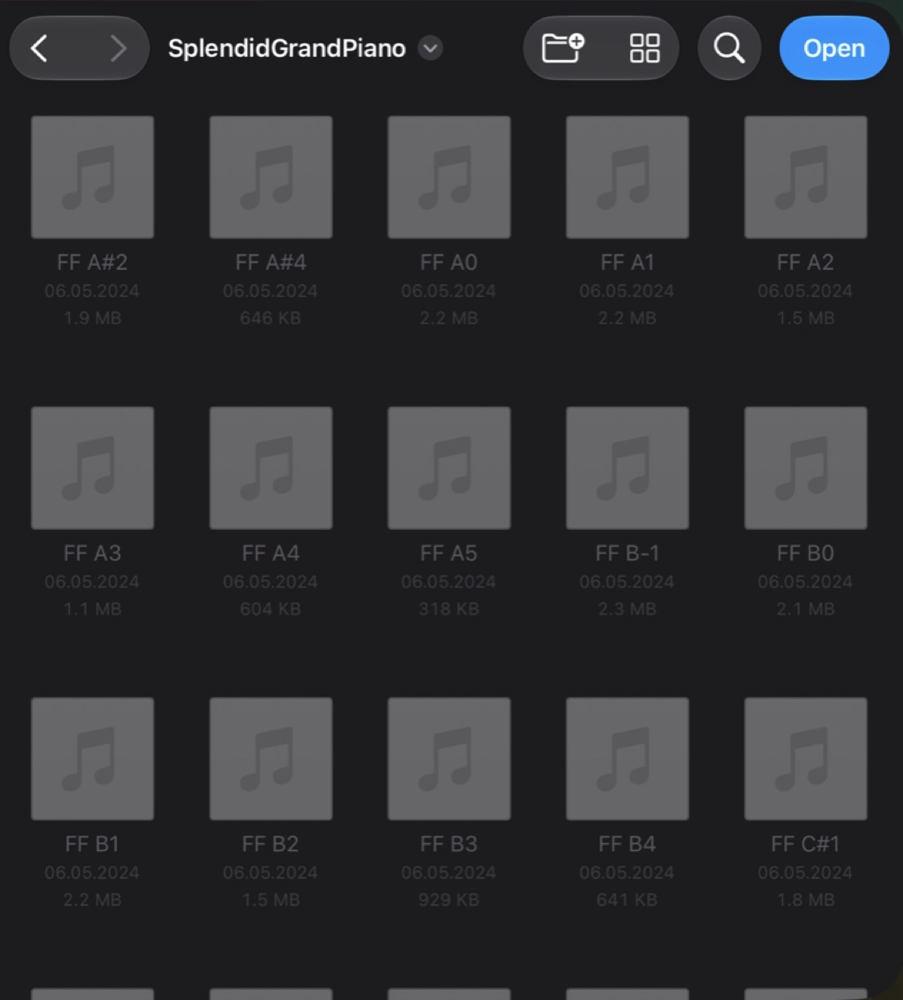
The free web SFZ Builder
If you would rather prepare a pack on a computer, or want a saved
.sfz to reuse, the free SFZ Builder on the Hexatone website
does the same mapping in your browser. It runs entirely in the browser
(nothing is uploaded), detects each sample's pitch from its filename or
by listening to the audio, maps the keyboard automatically, lets you
audition and adjust, and exports a ready-to-import .zip.
Save that .zip to Files, then import it with the step
above.
How much can I load?
Sample libraries now load up to what your device can actually handle, rather than a single fixed limit, so larger packs work on more capable iPads. If an instrument is too big for your device to load, Hexatone tells you the reason instead of failing quietly, so you know to choose a smaller pack.
Loading is also clearer about problems. A pack that is missing some of its samples, or cannot read them, warns you and tells you what is wrong rather than playing the wrong sound for the keys it could not fill. A single-file import that cannot be decoded now fails with a clear message instead of creating a silent instrument.
Managing instruments
When you have imported instruments, a Manage instruments row appears. It shows your library and its total size. Open it to:
- See each instrument and its size.
- Rename an instrument (swipe right on a row, then Rename).
- Delete an instrument to reclaim space (swipe left, or use Edit). Deleting the one you are playing switches Hexatone back to MIDI only.
Imported instruments take their name from the file or folder you imported.
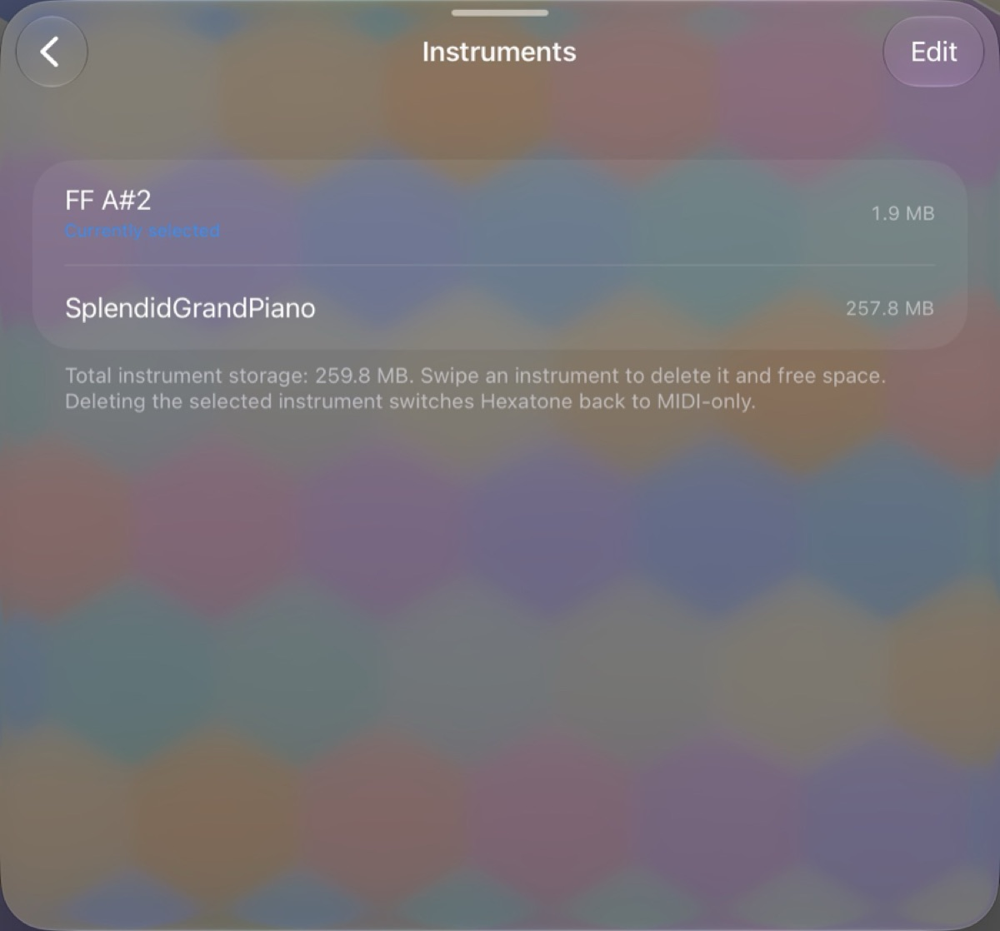
7. Scales and tunings
Open settings and find the Scale section. Choose between an equal temperament and a Scala file with the Source switch.
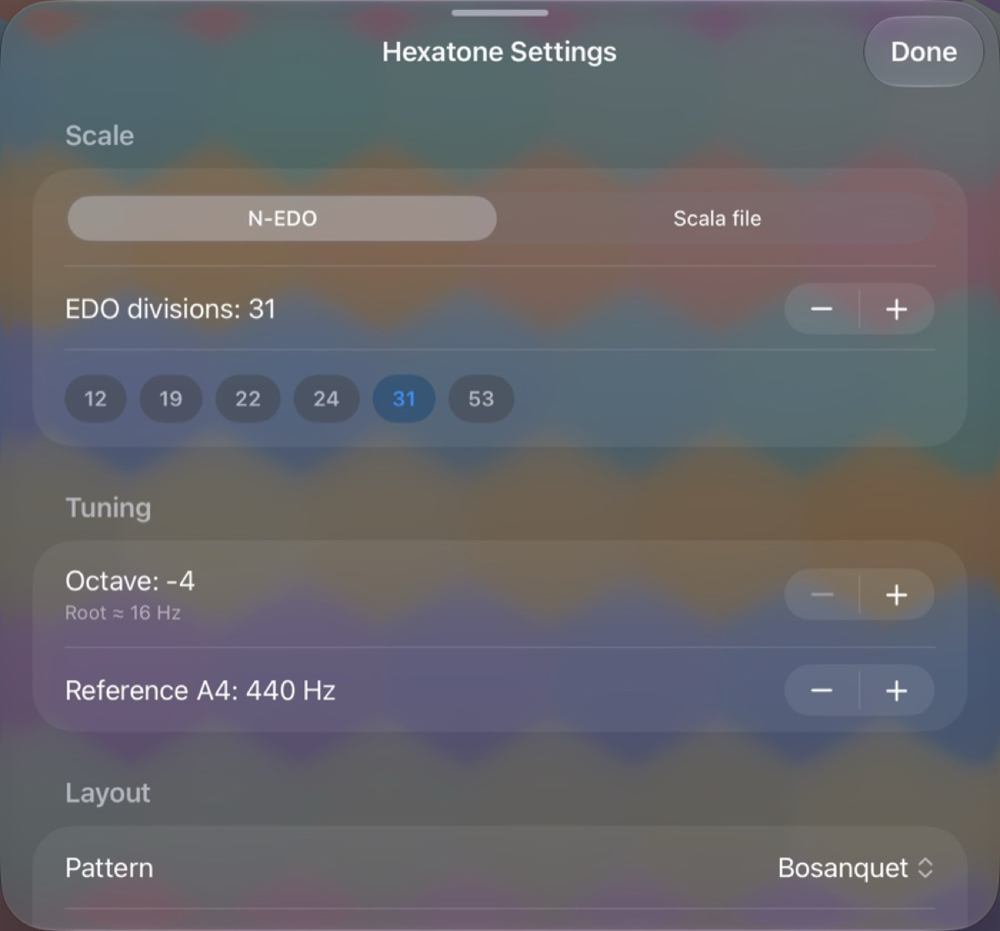
Equal temperaments (EDO)
EDO means "equal divisions of the octave". 12-EDO is standard Western tuning. Higher numbers add more pitches between the familiar ones.
- Use the EDO divisions stepper to set any value from 2 to 96.
- Quick buttons offer common choices: 12, 19, 22, 24, 31, and 53.
Scala (.scl) scales
Scala files describe custom scales (just intonation, historical temperaments, world tunings, and more). Switch Source to Scala file, then:
- Pick a scale from the list. A few example scales are included.
- The note below the picker shows how many notes the scale has per period.
- Tap Import .scl file to add your own. Imported scales are shared with the plugin automatically.
- With a Scala scale active, the keys show each note's ratio.
Managing scales
When you have imported scales, a Manage scales row appears. Open it to see your imported scales and swipe to delete ones you no longer want. Deleting the selected scale switches to another available scale. Bundled example scales are always available and are not listed here.
Octave and concert pitch
In the Tuning section:
- Octave shifts the whole keyboard up or down by whole octaves. The line underneath shows the resulting root frequency in Hz.
- Reference A4 sets concert pitch from 400 to 480 Hz (440 is standard; 432 is a common alternative).
8. Layouts
In the Layout section, the Pattern picker chooses how intervals are arranged on the grid. Each is a classic isomorphic layout:
- Bosanquet
- Wicki-Hayden
- Harmonic Table
- Fourths
- Accordion (B-system)
- Custom, where you set the step sizes yourself with the East and Up-right steppers.
The line under the picker shows the current axis steps. Because the layouts are defined in fractions of the period, they adapt to whatever tuning you have chosen.
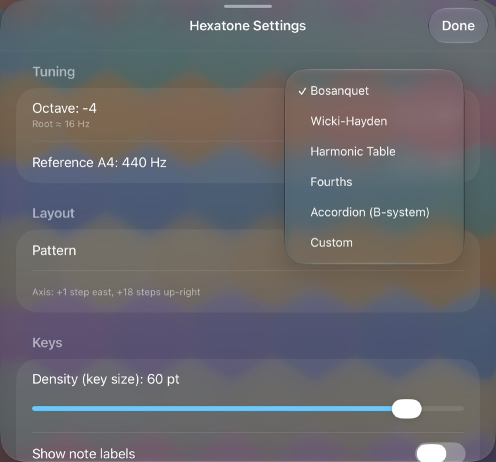
9. Appearance and key options
Appearance sets the colour palette:
- Hexatone Pastel
- Inferno
- Turquoise
- Campfire
In every palette, the hue of a key shows its pitch class and the brightness shows its octave, so you can read the keyboard at a glance. A row of swatches previews the palette.
The Keys section has two options:
- Density (key size) sets how big the keys are, from 26 to 64 points. Smaller keys mean more of them on screen.
- Show note labels turns the text on each key on or off.
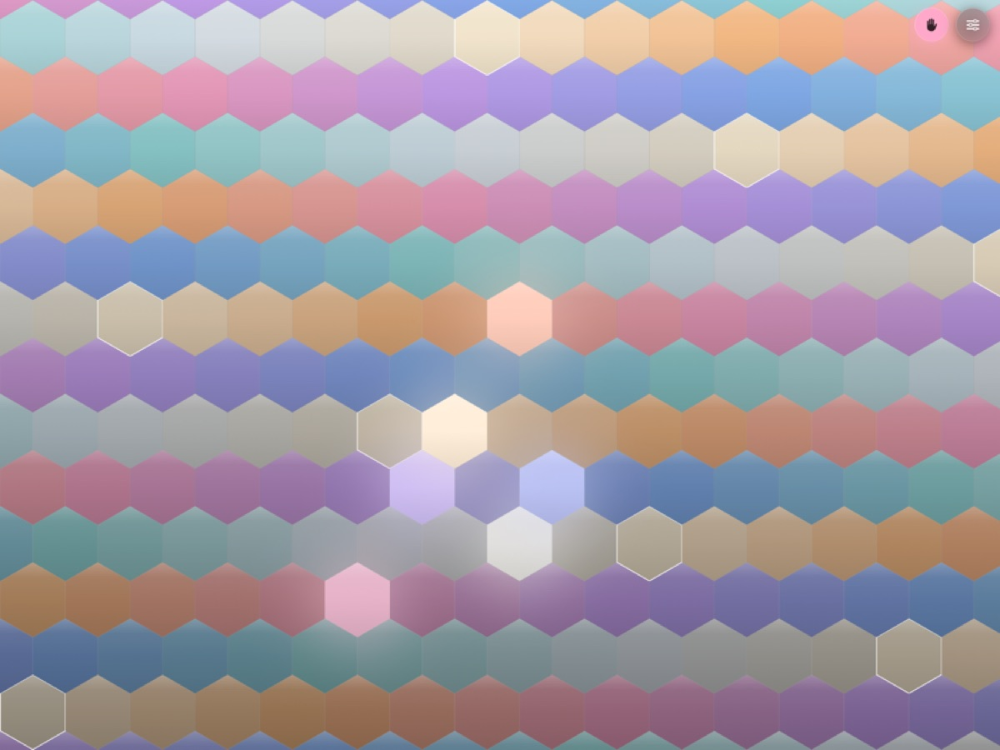
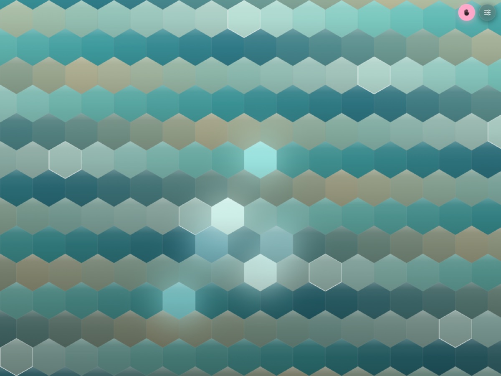
10. Using Hexatone with other apps (MIDI and MPE)
As an AUv3 plugin
Hexatone is also an Audio Unit (AUv3) instrument, so you can run it inside a host app such as AUM, Logic Pro, GarageBand, Cubasis, Loopy Pro, or Drambo. As a plugin it makes its own audio and sends MIDI at the same time.
- Add Hexatone as an instrument in your host, the same way you add any AUv3.
- Open its interface to play and to reach its own settings (the gear button), which mirror the app's.
- Scales and instruments you imported in the main Hexatone app appear in the plugin automatically.
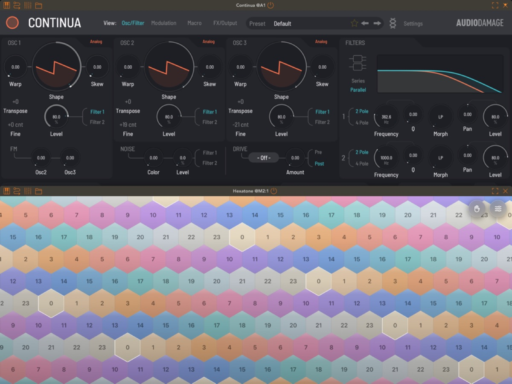
Recording and playing back in a DAW (incoming MIDI)
The Audio Unit now responds to incoming MIDI, so Hexatone fits into a normal recording workflow.
- Record what you play. Arm a MIDI track on Hexatone in your host (Logic Pro, AUM, Cubasis) and record. The notes you play are captured, and you can play them back through Hexatone or bounce them to audio.
- Drive it from outside. Hexatone can be played by an external MIDI keyboard or a sequencer routed to it, not only by touching the on-screen keys.
- Your tuning survives playback. Hexatone records per-note pitch bend, and it reads that back, so microtonal performances play back in tune rather than snapping to twelve notes.
Driving an external synth over MPE
Hexatone sends microtonal pitch using MPE (MIDI Polyphonic Expression): each note plays on its own MIDI channel with its own pitch bend, which is what places it at its exact microtonal frequency.
For a synth to play Hexatone in tune:
- Route the MIDI from Hexatone to the synth (in your host, or by enabling Hexatone as a MIDI source).
- Turn on MPE in the synth. A synth that is not in MPE mode cannot voice microtonal chords.
- Match the pitch-bend range. Hexatone defaults to plus or minus 48 semitones. Set the synth's MPE pitch-bend range to 48 as well. Many MPE synths follow Hexatone's setting automatically; ones that do not must be set by hand. In Hexatone you can also choose plus or minus 24, 12, or 2 in the MPE Output settings to match a simpler synth, as long as both numbers are equal.
If chords sound out of tune on the external synth, it is almost always the pitch-bend range not matching, or the synth not being in MPE mode. A fuller setup guide and a list of tested synths live on the website.
11. Settings reference
A quick map of every settings section.
- Scale. Source (N-EDO or Scala file). For N-EDO: divisions (2 to 96) and quick buttons. For Scala: scale picker, import, and manage scales.
- Tuning. Octave (minus 4 to plus 3) and Reference A4 (400 to 480 Hz).
- Layout. Pattern (named layouts or Custom). Custom sets the East and Up-right steps.
- Keys. Density (26 to 64 pt) and Show note labels.
- Appearance. Palette, with a swatch preview.
- Velocity. Source (Fixed, Accelerometer, Pencil / Force) and, for the sensing modes, a velocity curve (min, max, shape).
- MPE Output. Pitch-bend range (plus or minus 48, 24, 12, or 2).
- Instrument. Built-in sound, Mute, Voices, import single sample, build instrument from folder, import multisample, manage instruments, and the Sine preview tone.
- About. App name and version.
12. Uninterrupted playing (iPad gestures)
When you play with several fingers, iPad's own system gestures can sometimes pull you out of the app. Hexatone reduces this where it can (it asks iOS to defer the edge swipes and hides the home indicator), but two of iPadOS's gestures cannot be disabled by any app:
- the four and five finger multitasking gestures (swipe to switch apps, pinch to go home).
For a performance with no interruptions:
- Turn off Settings, Home Screen and Multitasking, Gestures (the four and five finger gestures), or
- Use Guided Access (Settings, Accessibility, Guided Access). Triple-click the side or home button to lock into Hexatone, and triple-click again to leave.
13. Troubleshooting
An imported instrument fails to load or makes no sound, but
still shows in the list. The most common cause is that the
sample file names in the .sfz do not match the actual files
(file names are case sensitive). Hexatone now tries to match names
flexibly and will tell you exactly what is wrong (for example, how many
samples it could not find). Re-export from the SFZ Builder, or check
that the .sfz and its samples are in the same folder, then
import again.
Microtonal chords sound out of tune on my external synth. The synth's MPE pitch-bend range does not match Hexatone's, or the synth is not in MPE mode. Set both to 48 (or any equal value), and make sure MPE is on. See Driving an external synth over MPE.
A held chord goes silent on its own. The Hexatone Bell voice decays naturally. Use Hexatone Glass or a sustaining instrument for notes that ring forever under Hold.
Only some of my notes sound when I play a big chord. You have reached the Voices limit (or, for external synths, the MPE channel limit). Raise the Voices slider, or play fewer notes.
The app keeps switching away while I jam. That is an iPad multitasking gesture, not Hexatone. See Uninterrupted playing.
An imported instrument is too large. Hexatone loads up to what your device can handle, which is more on capable iPads. If a pack is too big for your device, Hexatone tells you the reason instead of failing quietly. Use a smaller pack on that device.
Some keys play the wrong sound or are silent after importing a pack. A pack may be missing some of its samples, or unable to read them. Hexatone warns you and says what is wrong rather than playing the wrong sound for those keys. Re-export the pack with all its samples, or use the folder build, which lets the app map the samples itself.
14. FAQ
Do I need any other app to make sound? No. The built-in voices and sampler play in tune on their own. Other apps are optional.
Is there a subscription or in-app purchase? No. One price, every feature included. No accounts, no ads, no data collection.
What audio formats can I import? WAV and AIFF are best. CAF, M4A, AAC, ALAC, and MP3 usually work. OGG is not supported.
Can I use my own scales? Yes, import Scala
.scl files. Imported scales are shared with the plugin.
Does it work on iPhone? Hexatone is iPad only for now. iPhone support is planned.
Does it support full MPE expression like a Seaboard? Hexatone sends per-note pitch (the microtonal dimension) plus velocity. The continuous timbre and pressure dimensions of touch controllers are on the roadmap. A flat screen cannot natively sense those, so they need careful design.
15. Privacy
Hexatone collects no data, has no tracking, and requires no account. Your scales and instruments stay on your device (and in the shared container that lets the app and the plugin see the same library).
16. Support and links
- Website: the Hexatone site (promo page, the free SFZ Builder, and the synth setup guide).
- Support and feedback: nrrrm@icloud.com
Thanks for playing Hexatone. If you make something with it, I would love to hear it.